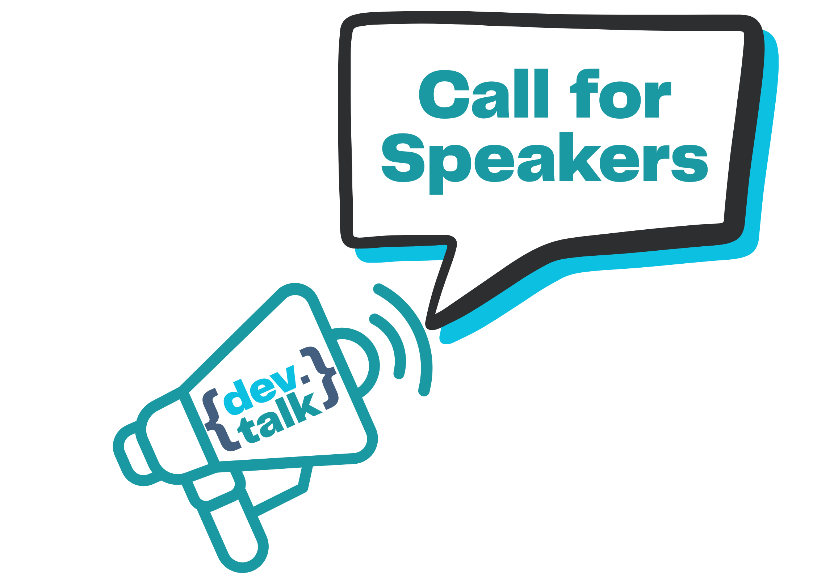

re:connect - A huge supporter. They help source the event spaces for the meetup, provide the subscription to the ticketing system, and provide the most important thing of all - moral support!

Welcome to {dev.talk}
{dev.talk} (pronounced "dev dot talk") is a community-driven monthly meetup bringing together software engineers and tech professionals in the Bournemouth and Dorset area.
Free to attend and run by community volunteers, we create an inclusive space where developers of all experience levels can learn, share knowledge, and connect.
Each meetup features sessions from community members (mostly of a technical nature), with time for networking and discussions between talks. Whether you're a seasoned developer or just starting out, you'll find a welcoming environment to explore new ideas and "geek out" with fellow tech enthusiasts.
To extend our reach beyond the in-person events, all sessions (with speaker permission) are recorded and shared on our YouTube Channel, creating an accessible resource for the wider developer community.
Our mission is simple: build a thriving, supportive tech community in Dorset where everyone can grow professionally while making meaningful connections.
Come and Join Us
Event Details
Please Note: That all {dev.talk} events will be photographed and recorded. If you do not wish to be included in a photo or video, please make the organisers aware.
Tickets
If you would like to come to one of our friendly events, see our ticket site for free tickets.
What Does a Typical Event Look Like?
- Focus: Software engineering topics
- Location: In or around Bournemouth, UK
- Attendees: Expecting 40-60 participants
A typical 2-hour session will look like this:
-
Arrival and Networking (15-20 minutes)
Attendees check in, grab refreshments, and mingle with others in a relaxed setting.
-
Welcome and Introduction (5-10 minutes)
The host provides a warm welcome, shares announcements, and introduces the speakers and agenda.
-
First Speaker + Q&A (25-30 minutes)
The first speaker delivers a talk on a tech topic, followed by a brief audience Q&A.
-
Break and Networking (10-15 minutes)
A short intermission to recharge, discuss the first talk, and connect with attendees.
-
Second Speaker + Q&A (25-30 minutes)
The second speaker presents their session, followed by another interactive Q&A.
-
Wrap-Up and Closing (5-10 minutes)
The event concludes with thanks to speakers, attendees, and sponsors, along with reminders about upcoming events.
-
Post-Event Networking (Time dependant)
Attendees can stick around to chat, exchange ideas, and build deeper connections.
Why attend?
- Learn: Discover something new from experienced professionals and peers.
- Teach: Share your knowledge and insights (even if you're not a speaker).
- Engage: Connect with experts who might help you solve current challenges.
- Build Relationships: Form meaningful connections within the tech community.
- Boost Confidence: Gain self-assurance by networking and sharing your ideas.
- Express Yourself: Share your views, thoughts, and passions in a supportive space.
- Diversity of Thought: Gain fresh perspectives from a variety of individuals.
- Break Barriers: Interact with people from diverse backgrounds and experiences.
- Discover Venues: Explore local spaces you might not have known about before.
- Meet New People: Expand your personal and professional network.
- Find Opportunities: Connect with new prospects and opportunities in your area.
- Knowledge Sharing: Tap into the software engineering expertise within our community.
- Networking: Engage with peers who share your technical interests and ideas.
- Community: {dev.talk} is created by and for the community-come and be part of it. Everyone is welcome.
Who should attend?
- Software Engineers
- Web Developers
- Systems Designers
- Technical Leads
- Engineering Managers
- Software Architects
- DevOps Engineers
- QA Engineers
- Cyber security experts
- Data Engineers
- BI Analysts
- Students
- Graduates
- Anyone with a deep interest in the technical workings of software and systems
Recruiters: Note that {dev.talk} events are for everyone, but this is not an event for recruiting. This is a friendly welcoming place and attendees should not feel pressured to use your services. Any recruiter who attends and is seen to break this rule, will be asked to leave immediately.
Attendee Feedback
If you attended a previous event, then please tell us about your experience using our Attendee Feedback Form (Takes 1 min)
Come and Speak
This is a community-driven event, where sessions are run by all of us. No matter your skill level, experience in the industry, or background in public speaking, you are warmly encouraged to take part.
What Can You Talk About?
We welcome sessions of any length-from lightning talks (5 minutes) to in-depth discussions (up to 90 minutes)-on topics related to software engineering, including:
- Technical deep dives
- Soft skills
- Mental health in the tech industry
- Career progression
Here are some sample topic ideas for sessions that you could present:
- Building Scalable Web Applications
- Effective Code Reviews
- DevOps: Automating Software Delivery Pipelines
- Cybersecurity for Developers
- Navigating Cloud Computing Platforms
- Building for Accessibility
- Using AI for Code Generation and Debugging
- APIs in Practice: Designing for Performance and Usability
- Mastering Git and Version Control
- Testing Strategies for Modern Applications
- Serverless Computing Explained
- Ethics in Software Development
- Design Patterns for Modern Applications
- Testing in Depth: Unit, Integration, and Performance
- TDD/BDD: Writing Tests That Drive Your Development
- Cloud-Native Development: Patterns and Practices
- Architecture Discussions: Monoliths, Microservices, and Beyond
- Coding Best Practices for Maintainable Software
- Tips and Tricks of your favourite language
- UX Design for Developers: Building with the User in Mind
How We'll Help You Succeed
We're committed to making sure everyone feels supported in contributing to {dev.talk}. Here's how we can help:
- Brainstorming Ideas: If you're unsure what to talk about, we'll help you find a topic.
- Structuring Your Session: Guidance on organizing your content to deliver a clear and engaging talk.
- Practice Opportunities: Run through your session with us via video call to build confidence.
Why Join Us?
- All Experience Levels Welcome: Whether you're a seasoned speaker or completely new, we'll support and encourage you.
- Friendly and Supportive Atmosphere: We want {dev.talk} to feel like a group of friends who uplift and learn from one another.
- Small group: We generally have between 40 & 60 attendees, so it feels like a big friend meetup
Resources on becoming a speaker
- Google Slides - Free slide building software
- A simple list of how to become a speaker and set out your talk.
- Making Live Coding Demos Easier with Demo Time
- Take formatted screenshots of code simply
- Beating stage fright
Speaker Feedback
If you were a speaker previously, then please tell us how it went, using our Speaker Feedback Form (2 mins).
Call For Speakers
If you would like to contribute to the community by speaking at {dev.talk} then register your interest (this is not a commitment) using our Call for Speakers form (2 mins), and one of the team will get back to you quickly.
Unfortunately as {dev.talk} does not use sponsorship, speaker payment or their expenses will NOT be covered.
If you have agreed to speak and know what your topic is, then please also fill out the Confirmed Speakers form with the details of your session, so a date and an agenda can be determined.
Volunteering
Do you want to get involved?
We always need people to:
- Welcome and check-in attendees
- Help setup and pack down afterwards
- Tech support for the speakers
- Take photos
- Help film the event
- Maintain the website
- Help find speakers
If this is something you are interested in doing, then please Contact us
Code of Conduct
We have a code of conduct that will be strictly adhered to. We want to be welcoming to everyone no matter who they are, what skill level they have or where they come from.
Upcoming topics
-
PHP Today: Evolving, Growing, and Thriving (30 mins) - George Buckingham
Let's take a look at the state of the modern PHP ecosystem and why you should seriously be considering it for your next development project.
-
No CS Degree != No Job (15 mins) - Miguel Salvador
Getting a job in the industry without a CS degree, and strategies to persevere through the whole process.
-
My first year in YouTube (10 mins) - Kerry Oliver
I will tell you the ups and downs of starting and maintaining my YouTube channel through its first year.
-
Human side of change (30 mins) - Maria Gaganova
As developers, you are building new tools and disrupting the way others operate. having a tool is great, but then adopting users to change their behaviors requires separate focus, time and resources. Sometimes, we need to let users "destroy" the tool first, only to learn how to make them "love" it later. I'll give some examples on how I went about this challenge in the teams I worked with and how important is the work between developers, users, stakeholders, project leads, change managers and so on.
-
Clean Architecture complements Salesforce well-architected framework (30 mins) - Ganesh Tambat & Dayton Meyer
The session will dive into practical strategies to revolutionize your Salesforce development using proven Clean Architecture approach by extending it's Well-Architected Framework. Discover how to decouple dependencies, improve low-code/pro-code quality, and deliver robust solutions that adapts to evolving business needs.
-
Nix for Reproducible Developer Environments (15 mins) - Oliver Pauffley
The quickest and most painful way of getting developers on the same dependencies
-
Building my blog: A journey of discovery (45 mins) - Mark Oliver
In this session, I will explain the journey of discovery of building my fully interactive Blog website and the engine behind it using free cloud technologies such as Azure Static Web Apps, Github Actions and Blazor WebAssembly.
-
Why is there a shark in my Wire - An introduction to Wireshark (25 mins) - Mark Oliver
A short introduction to the network protocol analyser tool Wireshark, and why it can be helpful for software engineers. I will show the basics of running the tool, the benefits of knowing this tool for all software developers, and then cover some real life examples of where it has been used to aid development of production systems.
Previous topics
-
Beyond Automation: How Agentic AI is Reshaping the Future (30 mins) - Claudia De Jeu Boronat
Agentic AI is at the forefront of the 2025 AI revolution, driving automation, decision-making, and intelligent collaboration. In this session, we'll break down what makes AI agents 'agentic,'' how they're designed, and the learning path to mastering them. We'll explore real-world applications across industries, and tackle the challenges and risks that come with deploying autonomous AI. If you're looking to stay ahead in AI, this talk is for you!
-
Tech Hiring: 3 Years of Change - Decoding the New Maze (45 mins) - Andy Ross
How tech hiring trends and employers expectations have evolved in the last 3 years + how to navigate the tech job market in 2025.
-
My Journey Building a City-Based Maze Game using ml5.js and open-source API's (25 mins) - Desmond Ezo-Ojile
In this session, I will walk through my journey of developing a city-based maze game, highlighting the technical challenges encountered and the strategies implemented to overcome them. I will delve into how I leveraged ml5.js and various open-source APIs to create dynamic maze game that brings the urban labyrinth to life.
-
Lessons from a Domain-Driven Design Transformation (30 mins) - Seemin Suleri
In this session, I will talk through the lessons we learned on scaling a company to a global level, by applying Domain-Driven Design (DDD) and Conway's law within the companies team structures, and the software system architectures. I'll tell you of the chaos we battled through to make the transformation succeed.
-
Design of Microservices using the REPR pattern over MVC (20 mins) - Jamie Savin
Exploring how to design a Microservice using the REPR pattern instead of MVC. Showcasing better alignment with SOLID principles and improved performance over MVC.
-
Breaking Into Industry: A Student's Perspective (20 mins) - Chloe Greenstreet
A Student's Perspective to beginning a career in the Tech Industry. An open discussion on what's expected from fresh graduate students by employers and how student opportunities, like Insight days and Placements, offer value to both companies and students.
-
Skyports Technology Journey: Lessons from Vertiport Automation (30 mins) - Dan Lambeth
A delve into the journey of building the Vertiport Automation environment, and lessons learned from it.
Upcoming events
- March 26th 2025: {dev.talk} - The one with Creatives & Coders at Cottonwood
- April 23rd 2025: {dev.talk} - The April One
- May 21st 2025: {dev.talk} - The one happening in May
Previous events
- February 26th 2025: {dev.talk} - The one where we forged friendships at the FOUNDRY - Watch February 2025 event
- January 30th 2025: {dev.talk} - The one where we deployed our first PATCH - Watch January 2025 event
- November 27th 2024: {dev.talk} - the one where we got started - Watch November 2024 event
Other local tech based events
A list of tech based events within 1 hour drive of Bournemouth:
- TechTonic
- Bournemouth 2600
- DevOps Exchange - Bournemouth
- OWASP Dorset Chapter
- Golang Dorset
- Dorset Umbraco Meetup
- Women In Tech Dorset
- Re:connect Conference
- Re:connect Lite (half day conferences)
- Things Connected
- South Coast eCommerce Meet-Up
- CyberSecWomen
- BSides Bournemouth Conference
- Digital Skills Hub - Tech Talks
- Microsoft Cloud (South Coast) User Group
- Hampshire AI / Spectrum IT Recruitment
- Speak Easy - Digital, Tech, Creative
- Dorset Digital Skills Workshops
- FinTech West
- Southampton Microsoft Data Platform and Azure Cloud
Supporters
{dev.talk} could not happen without support:
-

-

JustPickOneUK supports us by allowing the use of their video cameras and microphones to record the sessions.
-

Institute of Directors supported us by providing the first meetup venue (Nov 2024).
-

Patch (Bournemouth) supported us by providing a meetup venue (Jan 2025).
-

Barclays Eagle Labs (Poole) supported us by providing a meetup venue (Feb 2025).
-

Sessionize supported us by providing Call For Speakers Community access.
-
Meyrick Estates supported us by providing a meetup venue (Mar 2025).
"We are pleased to facilitate {dev.talk} at the Cottonwood Hotel and hope that the event is a great success. We are very keen to work with the local community to facilitate and trial new events as we begin an exciting journey to foster new collaborations, business and creative activity to the East Cliff. For enquiries to stage your event at the venue please contact: andrew@ajemeryconsulting.com"
Venues
In order to run the {dev.talk} sessions, we need a free space to host the attendees and speakers. Our recent events are bringing about 50 attendees each time, so getting a space that fits them all is tricky. If you know of a venue that may be able to host us for free ({dev.talk} is run by volunteers and does not use sponsors), then please Contact us
Venue Requirements
It needs to be able to:
- Large enough to seat around 50 attendees
- Be within 15 miles of Bournemouth
- Have a large screen (Projector or TV bigger than 65 inches) capable of showing Powerpoint presentations that all seated attendees can read easily.
- Seating for all attendees in the style of a classroom / lecture theatre (i.e. good view of the screen)
- A space in order for all attendees to network
- We are looking for a monthly commitment, but a one-off offer of a space is helpful too
- Be accessible for those with disabilities
- Be accessible on a weekday evening from 6:30pm to 9:30pm
- Parking nearby
- WiFi available to attendees
- Allows food and drink to be consumed (Soft drinks / Biscuits / Crisps)
- Allows filming of the event and venue
Benefits to the Venue
Hosting a FREE {dev.talk} event provides your company/venue with the following benefits:
- Showcase your venue to all attendees in a positive light.
- Recognition in the organiser slides at every event held at your venue.
- A permanent link on our website (see Supporters).
- Mentions on the Eventbrite ticket page.
- Shout-outs on our Bluesky social media account.
- Inclusion in event recordings published on our YouTube channel.
- Recognition in event-related discussions on our Discord server.
- Mentions on our LinkedIn page.
- We'll actively promote and evangelize your venue, highlighting its unique features.
- Boosted word-of-mouth promotion from the local tech community.
Additionally, your venue will be recognized as a key supporter of the local tech community, playing a vital role in its growth and development.
YouTube
View past sessions on our YouTube Channel
Who are we?
{dev.talk} was created by Mark Oliver in 2024. He saw that Bournemouth was lacking a software engineering based meetup despite being a Tech Hub on the South Coast of the UK, and as Wilton Knight once said "one person can make a difference", so Mark decided to create the meetup, and the community around it.
Contact Us
For any questions or comments, please contact us via:
Buy us a Coffee
Buy the {dev.talk} team a coffee with Ko-Fi.. Any monies given will be used to provide refreshments at the following meetup.
Frequently Asked Questions (FAQs)
-
Is there a code of conduct?
YES, and it will be strictly followed: Code of Conduct
-
How do we get in touch?
All ways to get in touch are on our website: devdottalk.uk
-
I am just learning, can I come?
YES - Everyone is welcome. Come and meet people from all stages in their career.
-
Will there be refreshments?
Soft drinks and biscuits will be provided.
-
Are there going to be recruitment agencies attending?
No selling or promotion of services is allowed at our event. Any person found doing so will be asked to leave.
-
Is this event really free?
YES - The organisers are committed to creating a community and receive no benefit from the event other than the community. We rely on the support of the venue hosts for a free event space.
-
Can we contribute to the refreshments?
Sure, they are currently provided by the organisers (we have no sponsors), but if you want to help out, check out our Ko-Fi link.
Privacy Policy
{dev.talk} is committed to protecting your privacy and will never sell your information.
1. Information We Collect
We collect the following types of information for all attendees:
- Personal Information: Name, email address, when you register for events or sign up for our communications.
- Event Participation Data: Information about the events you attend or register for, including preferences or feedback.
We collect the following types of additional information for speakers:
- Personal Information: Name, Job Title, email address, profile picture, Bio links, when you speaking at events.
2. How We Use Your Information
We use the collected information to:
- Facilitate event registration and communication about events.
- Send updates, newsletters, or announcements about our activities.
- Understand attendee preferences to improve our events and offerings.
- Comply with legal obligations, if necessary.
We do not sell or share your personal information with third parties for marketing purposes.
3. How We Share Your Information
We may share your information only:
- With service providers (e.g., event platforms or email tools) who assist in organizing and managing our events.
- If required by law, regulation, or legal processes.
- With your consent, in cases where you choose to participate in certain public forums (e.g., discussion boards or social media).
4. Data Storage and Security
We take reasonable measures to protect your personal information from unauthorized access, use, or disclosure. However, no data transmission or storage system can be guaranteed to be 100% secure.
6. Photography and Recording
By attending our events, you consent to being photographed or recorded, as we may capture images or videos for promotional purposes. If you prefer not to be photographed or recorded, please inform us in advance or speak with an event organizer.